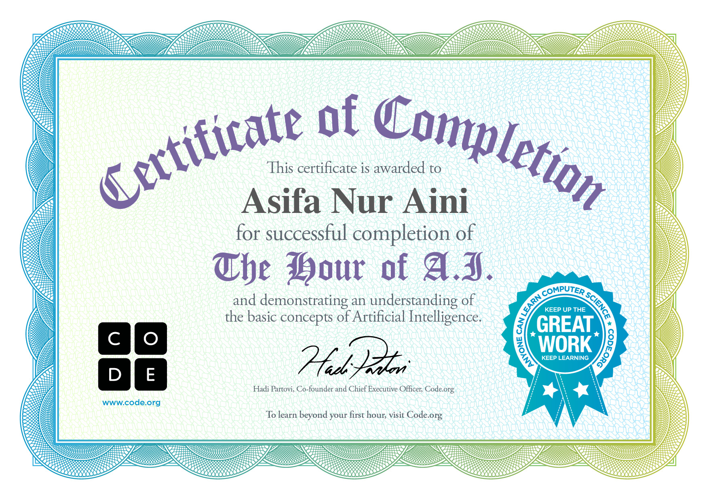
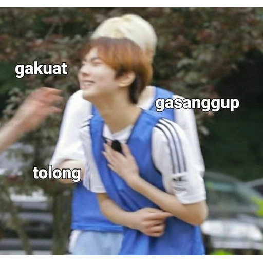
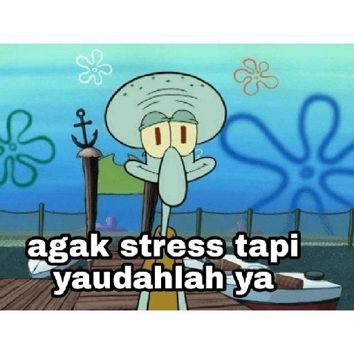

Segala puji bagi Allah Swt yang telah menolong hamba-Nya menyelesaikan makalah ini dengan penuh kemudahan. Tanpa pertolongannya mungkin saya tidak akan sanggup menyelesaikan dengan baik.
Makalah ini disusun agar pembaca dapat memperluas ilmu tentang "Upaya reboisasi", yang saya sajikan berdasarkan pengamatan dari berbagai sumber. Makalah ini saya susun dengan berbagai rintangan. Baik itu yang datang dari diri saya sendiri maupun yang datang dari luar. Namun dengan penuh kesabaran dan terutama pertolongan dari Allah Swt akhirnya makalah ini dapat terselesaikan.Makalah ini menjelaskan tentang "Lingkungan Hidup".
Saya juga mengucapkan banyak terima kasih kepada Guru yang telah membimbing kami agar dapat menyelesaikan makalah ini.
Semoga makalah ini dapat memberikan wawasan yang lebih luas kepada pembaca. Walaupun makalah ini memiliki kelebihan dan kekurangan. Saya mohon untuk saran dan kritiknya. Terima kasih.
Kerusakan lingkungan hidup akibat populasi manusia dan perkembangan zaman pada saat ini. Populasi manusia mempengaruhi keadaan alam, semakin banyak manusia tinggal di suatu daerah maka kebutuhan hidup juga bertambah. Hutan yang merupakan habitat bagi berbagai macam spesies flora dan fauna adalah produsen oksigen terbesar di planet bumi. Tumbuh-tumbuhan hijau menerima sinar matahari, air (H2O) dan karbon dioksida (CO2) dari lingkungan sekitarnya yang kemudian akan diubah menjadi oksigen (02) dan karbohidrat (C6H1206). Senyawa-senyawa yang dihasilkan oleh tumbuhan hijau melalui proses fotosintesis tersebut dibutuhkan oleh manusia dan hewan untuk melangsungkan kehidupannya. Setiap tahun tumbuh-tumbuhan di bumi mensintesis sekitar 150.000 juta ton karbon dioksida (CO2) dan 25.000 juta ton hidrogen (H) dengan membebaskan 400.000 juta ton oksigen (02) ke atmosfer, serta menghasilkan 450.000 juta ton zat-zat organik.
Selain di hutan, tumbuhan hijau juga berperan penting di lingkungan sekitar kita. Tanpa tumbuhan hijau, lingkungan di sekitar kita akan terasa panas dan tidak nyaman. Apalagi jika tumbuhan di hutan menghilang dalam skala yang cukup besar setiap tahun akibat penebangan liar dan sebagainya, tentu akan berdampak negatif terhadap keadaan atmosfer bumi. Setiap pohon yang ditanam mempunyai kapasitas mendinginkan udara sama dengan rata-rata 5 pendingin udara (AC/Air Conditioner) yang dioperasikan 20 jam terus menerus setiap harinya. Tidak hanya itu, tumbuhan hijau juga dapat menjernihkan udara di sekitar kita karena setiap 1 ha pepohonan mampu menetralkan karbon dioksida yang dikeluarkan 20 kendaraan, dan setiap 93 m2 pepohonan mampu menyerap kebisingan suara sebesar 8 desibel.
Dikarenakan peran tumbuhan hijau yang sangat penting di hutan maupun di lingkungan sekitar kita, penulis mencoba untuk memberikan beberapa gagasan dalam upaya pelestarian hutan dan lingkungan hidup melalui reboisasi dan penghijauan. Upaya reboisasi dan penghijauan ini dapat menjadi wadah untuk menyejahterakan masyarakat. Selain itu, kesejahteraan masyarakat juga dapat dicapai melalui peran optimal Pemerintahan Daerah dengan dunia usaha, serta partisipasi masyarakat, didukung oleh perundang-undangan di bidang ekonomi maupun politik, serta regulasi teknisnya. Pembangunan kesejahteraan rakyat bukan hanya merupakan salah satu paradigma otonomi daerah akan tetapi juga komitmen bersama pemerintah pusat dengan pemerintah daerah yang mensyaratkan terlembaganya hubungan fungsional dan adanya pembagian peran.
Supaya pembaca lebih memperhatikan kelestarian lingkungan hidup. Karena pada saat ini kita harus tegas dalam menentukan tindakan untuk menanggulangi kerusakan lebih lanjut seperti kerusakan hutan, kebakaran hutan, asap pabrik yang membuat lapisan ozon berlubang dan banyak kerusakan lain yang disebabkan oleh manusia kita dapat berusaha untuk menjaga lingkungan dengan cara reboisasi, tujuannya adalah peran tumbuhan hijau sangat penting dalam berbagai segi kehidupan manusia, langkah yang dapat dilakukan dalam reboisasi, manfaat yang dihasilkan dari reboisasi dan penghijauan, dan kesejahteraan masyarakat dapat dicapai melalui reboisasi dan penghijauan
melindungi lingkungan seperti mencegah erosi, banjir, dan tanah longsor, mengurangi perubahan iklim dengan menyerap CO2, memulihkan keanekaragaman hayati dengan menyediakan habitat bagi satwa dan tumbuhan, serta meningkatkan kualitas air dan tanah yang penting untuk pertanian dan kehidupan manusia. Manfaat lainnya termasuk mendukung ekonomi melalui penyediaan sumber daya dan ekowisata, serta memberikan manfaat sosial seperti peningkatan kualitas hidup dan pendidikan lingkungan.
Undang-Undang Lingkungan Hidup No. 4 tahun 1982 yang disempurnakan dengan Undang-Undang Lingkungan Hidup No. 23 tahun 1997 pasal 1 menyebut pengertian lingkungan hidup sebagai berikut.
"Lingkungan hidup adalah kesatuan ruang dengan semua benda, daya, keadaan, dan makhluk hidup, termasuk manusia dan perilakunya, yang mempengaruhi perikehidupan dan kesejahteraan manusia serta makhluk hidup lain."
Lingkungan hidup sebagaimana yang dimaksud dalam undang-undang tersebut merupakan suatu sistem yang meliputi lingkungan alam hayati, lingkungan alamnonhayati, lingkungan buatan, dan lingkungan sosial. Semua komponen-komponen lingkungan hidup seperti benda, daya, keadaan, dan makhluk hidup berhimpun dalam satu wadah yang menjadi tempat berkumpulnya komponen itu disebut ruang. Pada ruang ini berlangsung ekosistem, yaitu suatu susunan organisme hidup dimana diantara lingkungan abiotik dan organisme tersebut terjalin interaksi yang harmonis dan stabil, saling memberi dan menerima kehidupan.
Cara mengambil hasil hutan agar tetap terjaga kelesteriannya misalnya dengan sistem tebang pilih yaitu pohon yang ditebang hanya pohon yang besar dan tua, agar pohon-pohon kecil yang sebelumnya terlindungi oleh pohon besar, akan cepat menjadi besar menggantikan pohon yang ditebang tersebut.
Interaksi yang bersifat negatif terjadi apabila proses interaksi lingkungan yang harmonis terganggu sehingga interaksi berjalan saling merugikan.
Adanya gangguan terhadap satu komponen di dalam lingkungan hidup, akan membawa pengaruh yang negatif bagi komponen-komponen lainnya karena keseimbangan terhadap komponen-komponen tersebut tidak harmonis lagi.
Beberapa usaha yang dilakukan untuk pelestarian lingkungan hidup antara lain yaitu sebagai berikut.
Kerusakan hutan yang semakin parah dan meluas, perlu diantisipasi dengan berbagai upaya. Beberapa usaha yang perlu dilakukan antara lain:
Untuk menjaga kepunahan flora dan fauna langka, beberapa langkah yang perlu dilakukan antara lain:
PerundMelaksanakan dengan konsekuen UU No. 23 Tahun 1997 tentang Pengelolaan. Lingkungan Hidup, dan memberikan sanksi hukuman yang berat bagi pelanggar-pelanggar lingkungan hidup sesuai dengan tuntutan undang-undang.
"Reboisasi merupakan kegiatan penghutanan kembali kawasan hutan bekas tebangan maupun lahan-lahan kosong yang terdapat di dalam kawasan hutan" (Manan, 1978). "Rebolsasi meliputi kegiatan permudaan pohon, penanaman Jenis pohon lainnya di area hutan negara dan area lain sesuai rencana tata guna lahan yang diperuntukkan sebagai hutan. Dengan demikian, membangun hutan barupada area bekas tebang habis, bekas tebang pilih, atau pada lahan kosong lain yang terdapat di dalam kawasan hutan termasuk reboisasi" (Kadri dkk, 1992).
Selain di hutan, tumbuhan hijau juga mempunyai peran yang sangat penting di luar kawasan hutan. Tumbuhan hijau sebagai produsen utama oksigen dibutuhkan di lingkungan sekitar kita. Tumbuhan hijau selain berperan dalam kehidupan dan kesehatan lingkungan secara fisik, juga berperan dalamestetika dan kesehatan jiwa. Jadi, reboisasi adalah membangun hutan baru atau penanaman kembali kawasan hutan bekas tebangan maupun lahan-lahan kosong yang terdapat di dalam kawasan hutan.
Masyarakat dapat menikmati berbagai manfaat dari reboisasi dan penghijauan seperti yang telah disebutkan sebelumnya. Kesejahteraan masyarakat berkaitan dengan kondisi yang nyaman, baik, sejahtera dan terpenuhinya segala kebutuhan. Hal-hal yang berkaitan dengan kesejahteraan masyarakat tersebut dapat didapatkan melalui pelaksanaan reboisasi dan penghijauan.
Wilayah Negara Kesatuan Republik Indonesia yang beriklim tropis mempunyai sebuah aset yang tak ternilai harganya, yakni tanah yang subur. Menanami tanah subur dengan berbagai vegetasi bernilai ekonomis disertai dengan pengolahan yang tepat oleh sumber daya manusia yang baik dapat meningkatkan produksi dalam negeri yang tentunya dapat menjadi sumber kesejahteraan masyarakat.
Reboisasi dan penghijauan adalah dua langkah yang tepat dalam mewujudkan kesejahteraan masyarakat. Kesejahteraan masyarakat tidak dapat dicapai apabila masyarakat tidak mengoptimalkan potensi di lingkungan sekitarnya. Tumbuhan hijau di sekitar kita merupakan salah satu potensi yang dapat mendatangkan banyak manfaat apabila kita mengolahnya secara tepat. Oleh karena itu, peningkatan kualitas sumber daya manusia juga sangat diperlukan dalam mengolah lingkungan hidup demi tercapainya kesejahteraan masyarakat.
Kerusakan lingkungan hidup banyak diakibatkan oleh manusia. Diantaranya kebakaran hutan, penebangan liar yang mengakibatkan hutan gundul. Majunya teknologi seperti mobil, pabrik, dan sepeda motor membuat udara tercemar dan lapisan ozon berlubang karena asap kendaraan. Lapisan ozon yang berlubang membuat sinar matahari langsung ke bumi yang menyebabkan suhu di bumi naik. Karena suhu di bumi naik es di kutub utara mulai mencair. Hal tersebut membuat permukaan air laut meningkat. Tumbuhan mempunyai peran yang sangat vital dalam kehidupan manusia. Lingkungan sekitar yang gersang tanpa ditumbuhi vegetasi akan menyebabkan kondisi udara menjadi tidak nyaman. Selain itu, hilangnya vegetasi di hutan juga dapat menyebabkan berbagai dampak buruk bagi manusia. Oleh karena itu, upaya reboisasi dan penghijauan dibutuhkan untuk melestarikan lingkungan hidup sehingga dapat terwujud masyarakat yang sejahtera.
Berdasarkan kesimpulan di atas, kit disarankan agar setiap orang sadar akan pentingnya tumbuhan hijau sebagai produsen oksigen terbesar di planet bumi. Keuntungan yang didapatkan dari upaya pelestarian tumbuhan hijau melalui reboisasi dan penghijauan sangatlah banyak, maka diharapkan setiap orang dapat memulai upaya pelestarian tumbuhan hijau di lingkungan sekitarnya.
Gifford, Clive. 2007. Ensiklopedia Geografi untuk Pelajar dan Umum. Jakarta: Lentera Abadi. Poerwadarminta, W.J.S.. 1996. Pengertian Kesejahteraan Manusia. Bandung: Mizan. Hestiyanto, Yusman. 2005. Geografi SMA Kelas X. Jakarta: Ghalia Indonesia. Noor, Isran. Politik Otonomi Daerah untuk Penguatan NKRI. Seven Strategic Studies. Fitriana, Rina. 2008. Mengenal Hutan. Bandung: Putra Setia. Nugraha, Adrian R.. 2009. Stop Pemanasan Global. Bekasi: Cahaya Pustaka Raga.


